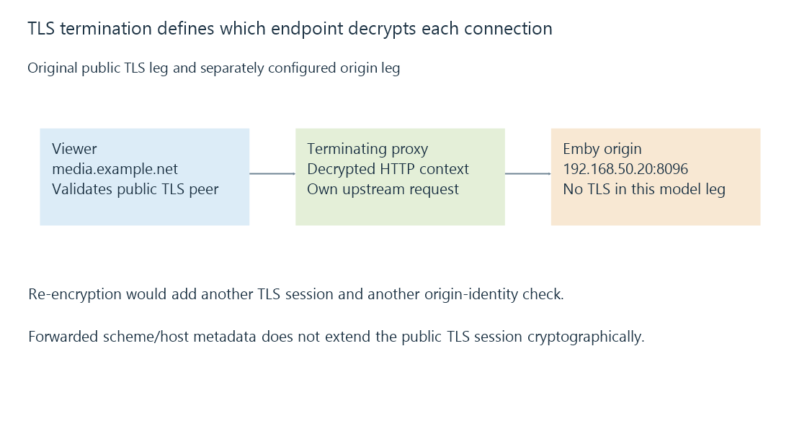

TLS termination and independent connection legs
TLS termination identifies the endpoint that decrypts protected records and handles the resulting application data, with any forwarded connection carrying its own protection and peer identity.
In a proxied connection, the certificate seen by the viewer can belong to the proxy’s TLS endpoint. Emby can receive a separate request from that proxy.
TLS termination is the point where a protected TLS connection ends and its records are decrypted for the endpoint’s application processing.
Compare the connection arrangements
| Arrangement | Public connection | Origin-side relationship |
|---|---|---|
| Direct Emby TLS | Client validates Emby’s TLS endpoint | No application reverse-proxy leg in this model |
| Proxy termination | Client validates proxy endpoint | Proxy makes a separately configured request to Emby |
| TLS pass-through | Intermediary forwards the protected connection | The final TLS endpoint still authenticates/decrypts it |
A pass-through intermediary can route connections without behaving like an HTTP reverse proxy that rewrites the decrypted request.
A terminating proxy, in contrast, can interpret HTTP and make a new upstream request. It becomes an application and trust boundary.

Public HTTPS does not describe the origin leg
Use this original two-leg projection:
{
"clientToProxy": {"tls": true, "requestedName": "media.example.net"},
"proxyToOrigin": {"tls": false, "endpoint": "192.168.50.20:8096"}
}
The public leg is protected under the stated model. The inside leg carries another connection whose TLS flag is false.
Choosing re-encryption for the upstream would create another TLS session. The proxy must then validate the intended origin’s evidence under its own policy; accepting any upstream certificate would not establish that peer’s identity.
Each certificate follows its own requested name
The viewer can validate media.example.net while the proxy requests another internal origin name.
Those are different reference identities. Sharing one displayed server name or copying a certificate file does not decide the appropriate name on every leg.
SNI, certificate selection and the configured upstream host each need their intended context. Certificate names develops that validation.
Forwarded metadata explains another application context
A terminating proxy can describe the original scheme, host or client through headers. The origin’s socket peer still belongs to the upstream connection.
Emby’s reverse-proxy secure-connection mode relates to that application arrangement. It does not cryptographically extend the public TLS session through the origin’s separate leg.
See Also
- Reverse proxies and the two-sided server path
- Forwarded client addresses and trusted proxy context
- HTTPS and TLS: transport protection and peer identity